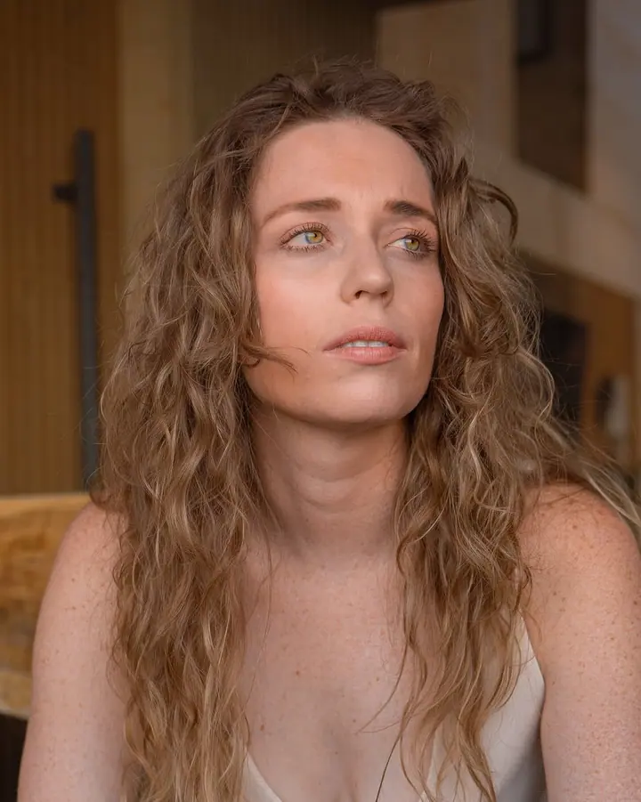
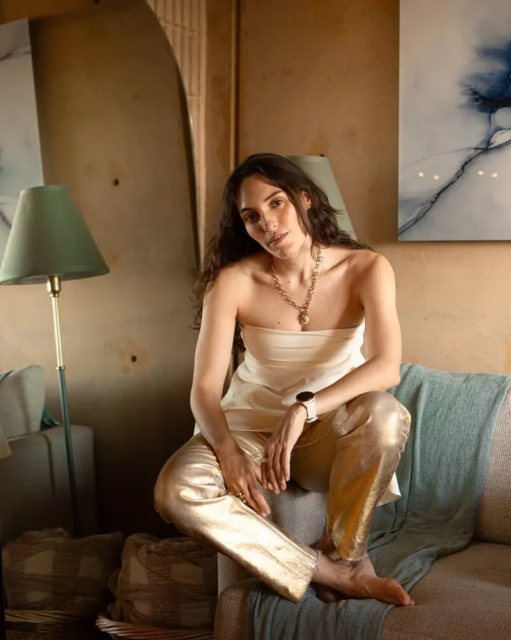
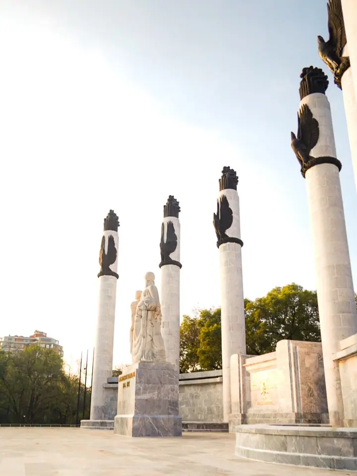
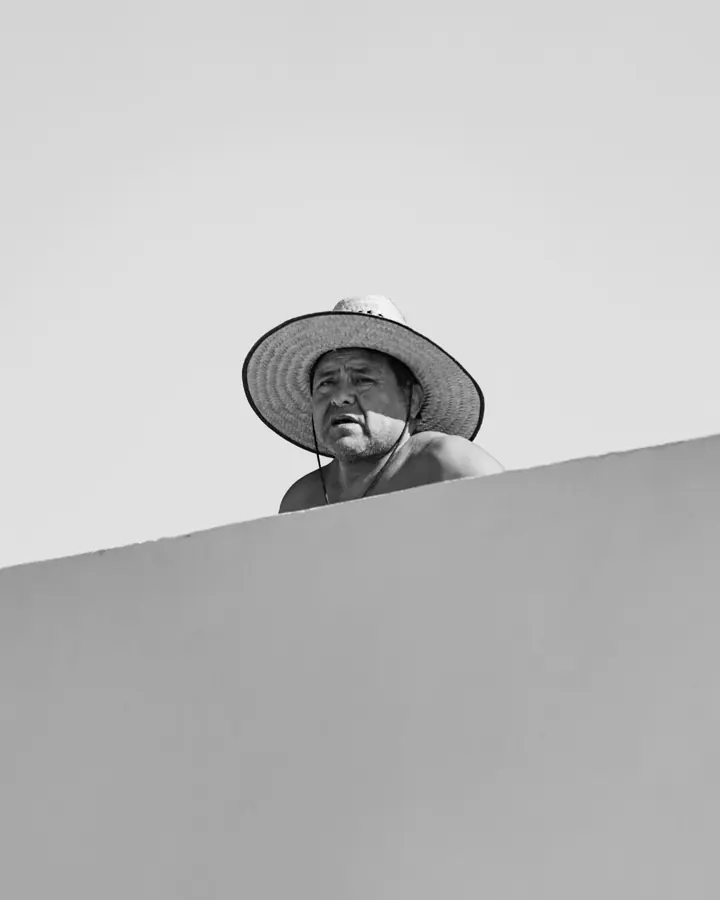
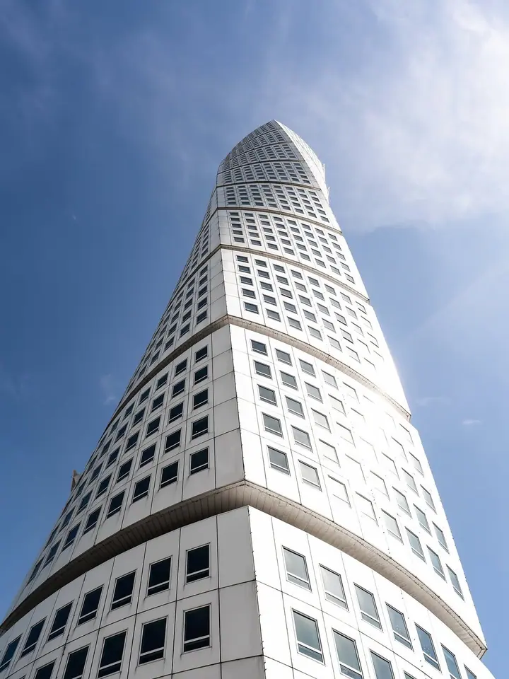
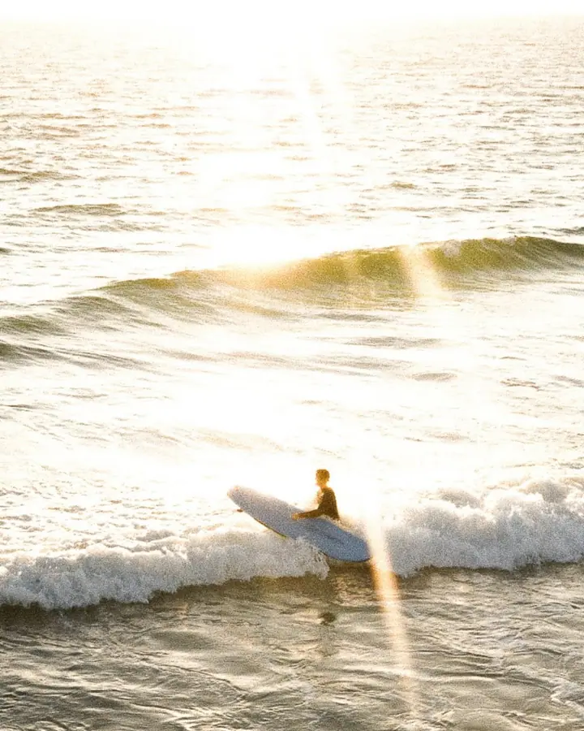
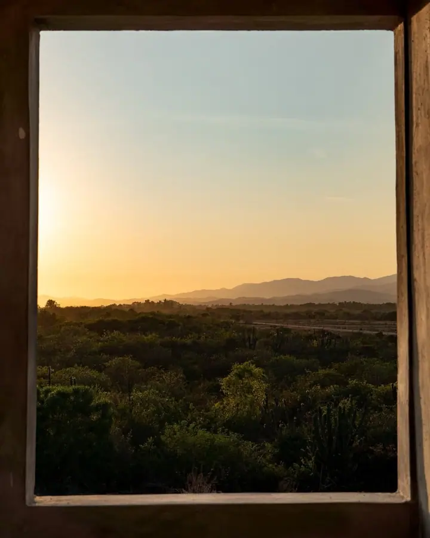
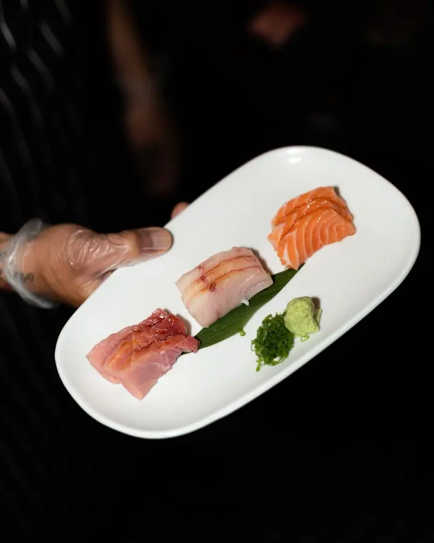

01 / 04
Svatby
Svatby fotím editoriálním okem, ale hledám skutečné okamžiky, ne naaranžované pózy. Fotím v Mexico City i na jakékoli destinaci, kam za vámi mám přijet.
Zeptat se na termín→







Skutečné okamžiky, ne naaranžované pózy
Zeptat se na termín →(01) Ahoj
Jmenuji se Alexis Brunel a fotím svatby , zásnuby a soukromé oslavy v Mexico City i kdekoli ve světě. Vycházím z komerční a editoriální fotografie , a tak si všímám detailů. Nejvíc mě ale zajímá to, co se mezi vámi děje doopravdy .
78příspěvků s fotkami a příběhy
(02) Co fotím
01 / 04
Svatby fotím editoriálním okem, ale hledám skutečné okamžiky, ne naaranžované pózy. Fotím v Mexico City i na jakékoli destinaci, kam za vámi mám přijet.
Zeptat se na termín→02 / 04
Zásnubní focení pro dva, klidně v zahradě, ve městě nebo u vás doma. Jde o váš příběh tak, jak opravdu je.
Zeptat se na termín→03 / 04
Narozeniny, večírky a další oslavy fotím tak, abyste si je mohli užít a na nic nemuseli myslet. Detaily, lidi i atmosféru večera.
Zeptat se na termín→Dále nabízím
Komerční a lifestylové focení pro značky. Mám za sebou módu, gastronomii i architekturu, a tenhle smysl pro detail si nesu do každé zakázky.
↗(04) Postup
Od první zprávy po hotovou galerii.
Krok 1 z 4
Pošlete mi datum, místo konání a to, co slavíte. Ozvu se vám co nejdřív a dám vědět, jestli mám volno.
Krok 2 z 4
Probereme průběh dne, místo a to, na čem vám záleží. Klidně anglicky nebo španělsky.
Krok 3 z 4
Jsem u toho, ale nepřekážím. Hlídám detaily a hledám skutečné okamžiky, abyste si svůj den mohli užít.
Krok 4 z 4
Snímky pečlivě vyberu a upravím, aby vyprávěly váš příběh tak, jak se opravdu odehrál.
Skutečný příběh, ať vás zavede kamkoli.
(05) Za objektivem
Jmenuji se Alexis Brunel a jsem fotograf z Mexico City. Svatby, zásnuby a soukromé oslavy fotím od roku 2019 a pracuji pod značkou Brunel Photography.
Než jsem začal fotit svatby, věnoval jsem se komerční a editoriální fotografii: módě, gastronomii a architektuře. Smysl pro detail mi z té doby zůstal. Na svatbě nebo oslavě ale nehledám naaranžované pózy, hledám skutečné okamžiky.
Fotím v Mexico City a za svatbami i akcemi cestuji na jakoukoli destinaci. Domluvíme se anglicky nebo španělsky. Napište mi datum, místo a co slavíte, a já se vám co nejdřív ozvu.
Alexis
Alexis Brunel · Svatební a eventový fotograf
Ano. Sídlím v Mexico City, ale na svatby a akce cestuji na jakoukoli destinaci, kam potřebujete.
Pracuji v angličtině i ve španělštině.
Nemusíte. Víc než naaranžované pózy mě zajímají skutečné okamžiky, takže vás většinu času nechám prostě být spolu.
Napište mi přes formulář datum, místo a co slavíte. Ozvu se vám co nejdřív s dostupností a dalšími informacemi.
(07) Kontakt
Napište pár vět o tom, co si představujete, a termín, který se vám hodí.
aabrunel@gmail.com